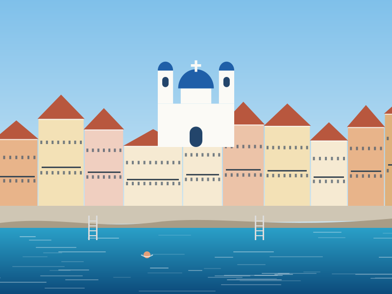
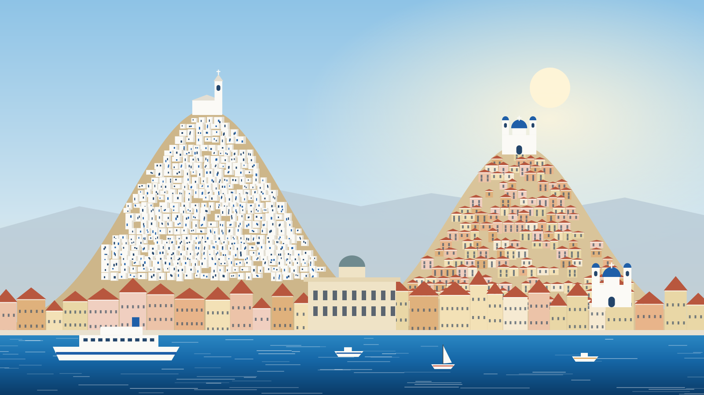
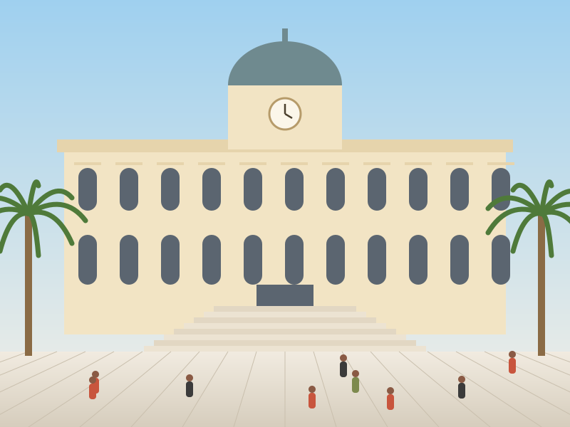
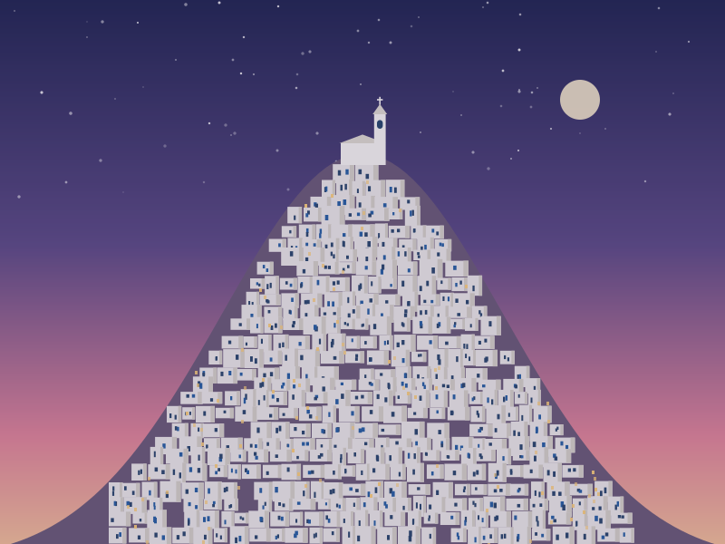
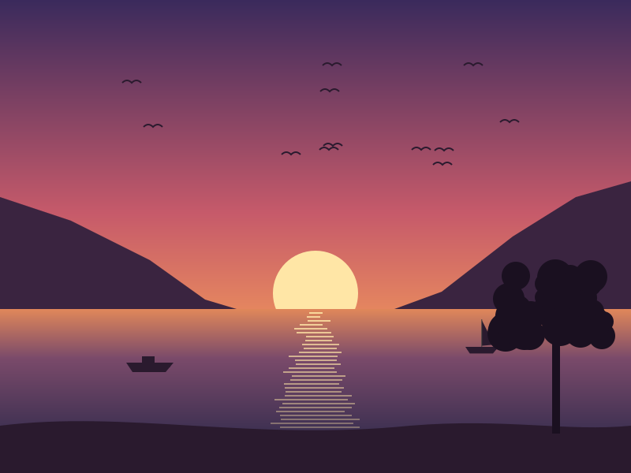
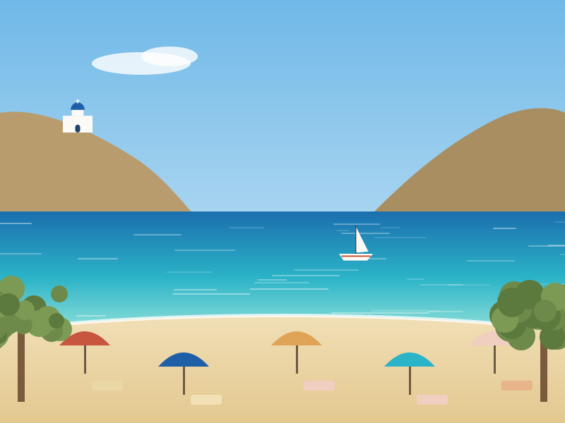

Vaporia
The old captains' quarter, where shipowners' mansions rise straight from the rocks beneath the blue dome of Agios Nikolaos, patron of sailors. Locals swim here from ladders set into the stone — right in the middle of town.

Cyclades · Aegean Sea · Greece
The Queen of the Cyclades — marble squares and opera houses, a medieval village on a hill, and a blue sea that never quite lets you leave.
Start exploringErmoupoli & Ano Syros
Syros is unusual in the Cyclades: its capital is not a maze of whitewash but a grand nineteenth-century city. Above it, on its own hill, the medieval Catholic village of Ano Syros keeps watch — while the Orthodox church of Anastasi crowns the neighbouring summit. The islanders have shared this view, and their festivals, for centuries.

The city of Hermes
Founded in the 1820s by refugees fleeing the War of Independence, Ermoupoli — named for Hermes, god of commerce — grew into Greece's busiest port and industrial centre. Merchants built in marble: mansions with painted ceilings, a Town Hall by Ernst Ziller facing the palm-lined Miaouli Square, and the Apollo Theatre, a jewel-box opera house modelled on La Scala.
Today it is the administrative capital of the Cyclades, and one of the most elegant towns in the Aegean — lived-in, unhurried, and at its best on an evening stroll around the square.

The medieval village
Built by Venetians in the thirteenth century, Ano Syros tumbles down its hill in a tangle of stepped lanes, arches and tiny chapels, all crowned by the Catholic cathedral of San Giorgio. From the top, the whole of Ermoupoli and the neighbouring islands spread out below.
It is also the birthplace of Markos Vamvakaris, the father of rebetiko — Greece's blues. Climb up at sunset, then stay for dinner and music in a taverna under the stars.
Postcards

The old captains' quarter, where shipowners' mansions rise straight from the rocks beneath the blue dome of Agios Nikolaos, patron of sailors. Locals swim here from ladders set into the stone — right in the middle of town.

A fishing village on the west coast famous for its sunsets. Find a table by the water, order grilled fish, and watch the sun slide into the Aegean between the headlands.

A deep, sandy bay shaded by tamarisks, with the little chapel of Agia Pakou watching from its rock. Easy, shallow water — perfect for long, lazy swims.
Opened in 1864 and modelled on Milan's La Scala, this tiny horseshoe of gilded boxes once hosted the first Italian opera troupes to tour Greece. In summer it fills again for the Festival Aegean.
Also called Della Grazia: a southern village of grand summer villas and gardens, built by Ermoupoli's merchant families, with calm coves nearby at Agathopes.
Beyond the last village the roads fade into goat paths. Hike to the Bronze Age site of Kastri, or take a boat to secluded Grammata bay, where sailors carved inscriptions into the rocks for over a thousand years.
Sand, pebbles, and clear water
Most of the island's beaches line the sheltered south and west coasts, a short bus ride from Ermoupoli. The rugged north is reached on foot or by boat. Select a beach on the map.
West coast
A deep, sandy bay shaded by tamarisks, with the little chapel of Agia Pakou on the rocks. Shallow water and plenty of tavernas.
Five thousand years
At Chalandriani and the fortified hilltop of Kastri, islanders bury their dead with marble figurines and "frying pan" vessels engraved with longships — some of the earliest ship images in the Aegean.
The island's famous son, a philosopher remembered by tradition as a teacher of Pythagoras, writes one of the first prose works in Greek.
Under Venetian rule a fortified village grows on the hill, and Syros becomes a Catholic stronghold protected by France through the Ottoman centuries.
Refugees from Chios, Psara and other islands, escaping the War of Independence, settle by the harbour. Within decades their town becomes Greece's leading port.
Shipyards, tanneries and textile mills flourish. The Apollo Theatre opens in 1864 and Ziller's Town Hall is completed in 1891.
As shipping moved to Piraeus in the twentieth century, Syros kept its grace instead of chasing crowds — a living island, busy all year round.
Sweet, salty, local
Syros is Greece's loukoumi capital. Soft, rose- or bergamot-scented cubes dusted in sugar, still made by hand in family workshops.
Nougat with almonds and honey pressed between thin wafers — the other sweet you will be offered as you step off the ferry.
A hard, piquant cow's-milk cheese with protected designation of origin, named after a village in the north.
Pork fillet cured with salt, pepper and aromatic spices, then air-dried — the island's answer to prosciutto.
Plan your trip
Ferries sail daily from Piraeus and Rafina near Athens, taking roughly 2½ to 4 hours depending on the vessel. Syros is also a hub for hopping to Tinos, Mykonos, Paros and Naxos.
Syros Island National Airport has short flights from Athens — about 35 minutes over the Aegean.
Wildflowers on the hills, green valleys, and Easter — when Catholic and Orthodox processions fill the streets of Ermoupoli.